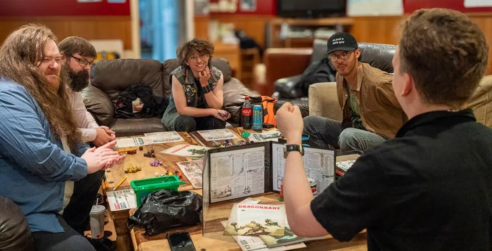

Getting Started with D&D
How to Get Started
Starting D&D is easier than it seems. You don’t need deep fantasy knowledge or a shelf of books—just curiosity and a willingness to dive into a shared story.
Most beginners start with a pre-written adventure and a simple character, often using free resources available online.
The Simple Steps to Begin Your Adventure
- Gather a group of friends or join a local D&D club or online community.
- Choose whether someone will be the DM—or find one already experienced.
- Create a character using a starter guide or a character-building tool.
- Pick a beginner-friendly adventure (like a Starter Set or free intro module).
- Sit down, roll some dice, and let the story unfold!
Know Before You Play
Before your first session, familiarize yourself with the basic flow of the game:
- How turns work
- What your character can do
- The role of the Dungeon Master
Learning a few basics and understanding table etiquette helps ensure an enjoyable experience for you and your group.
